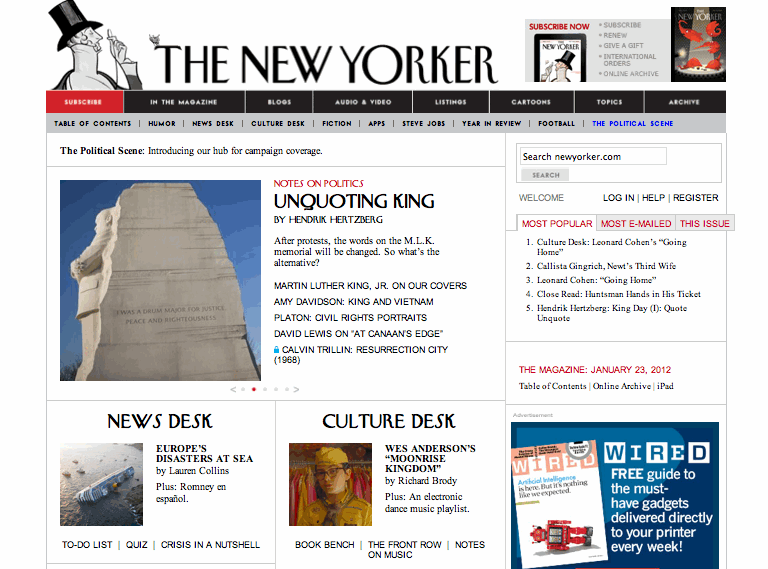

A Look At:

| Website # | Site Name | Url | Layout Type | Date Looked At |
|---|---|---|---|---|
| 1 | The New Yorker | http://www.newyorker.com/ | Power Grid | Monday 16. January . 2012 |
| Design Criteria | Analysis |
|---|---|
| Brand | ... |
| Functionality | ... |
| Interactivity | ... |
| Navigation | ... |